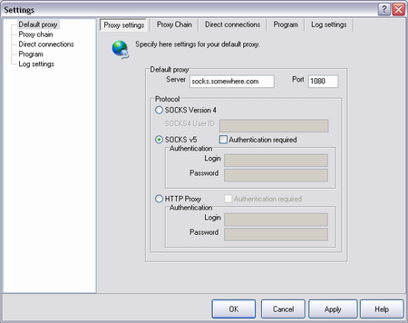

Nachdem nun das Profil erstellt ist muß der Proxy konfiguriert werden.
Sie benötigen:
Die IP Adresse des Proxies, den Port und Typ, und eventuell den LoginName und das Passwort.
|
| Proxy address | IP oder Domain Name |
| Port | Port auf dem der Proxy arbeitet |
| Type | SOCKSv4, SOCKSv5 oder HTTP(S) Proxy |
| Login/password | Falls der Proxy Authentifizierung benötigt. |
|
Öffnen sie das Menü File->Settings, und dort den "Default Proxy" Reiter.

Für einen neuen Proxy führen Sie die folgenden Schritte aus:
|
| 1 | Füllen Sie die Adresse und den Port des Proxies aus. |
| 2 | Wählen Sie den Typ des Proxies von der Liste aus. |
| 3 | Wenn der Proxy Authentifizierung benötigt markieren Sie das Kästchen "Authorization required" |
| 4 | Drücken Sie auf "Add" |
|
|
Meistens werden Sie nur einen Proxy benutzen, so daß diese Einstellngen nur einmal gemacht werden müssen. Wenn Sie
mehrere Proxies aneinanderreihen wollen können Sie eine Proxy Kette bilden.
Erinnerung: Ein HTTP Proxy muß die "CONNECT" Methode unterstützen um mit FreeCap benutzt werden zu können.
Ein oft gemachter Fehler ist zu versuchen den Firmenproxy der "CONNECT" nicht unterstützt zu verwenden. (Mehr...).
|
|
|
| Die 'Up/Down' Knöpfe sind dazu da die Reihenfolge der Proxies in einer Kette zu verändern.
|
| Der 'Check Proxy' Knopf überprüft nur ob der Port stimmt und der Proxy da ist. 'Proxy check' überprüft nicht den Typ oder die Username/Passwort Kombination. Noch nicht.
|